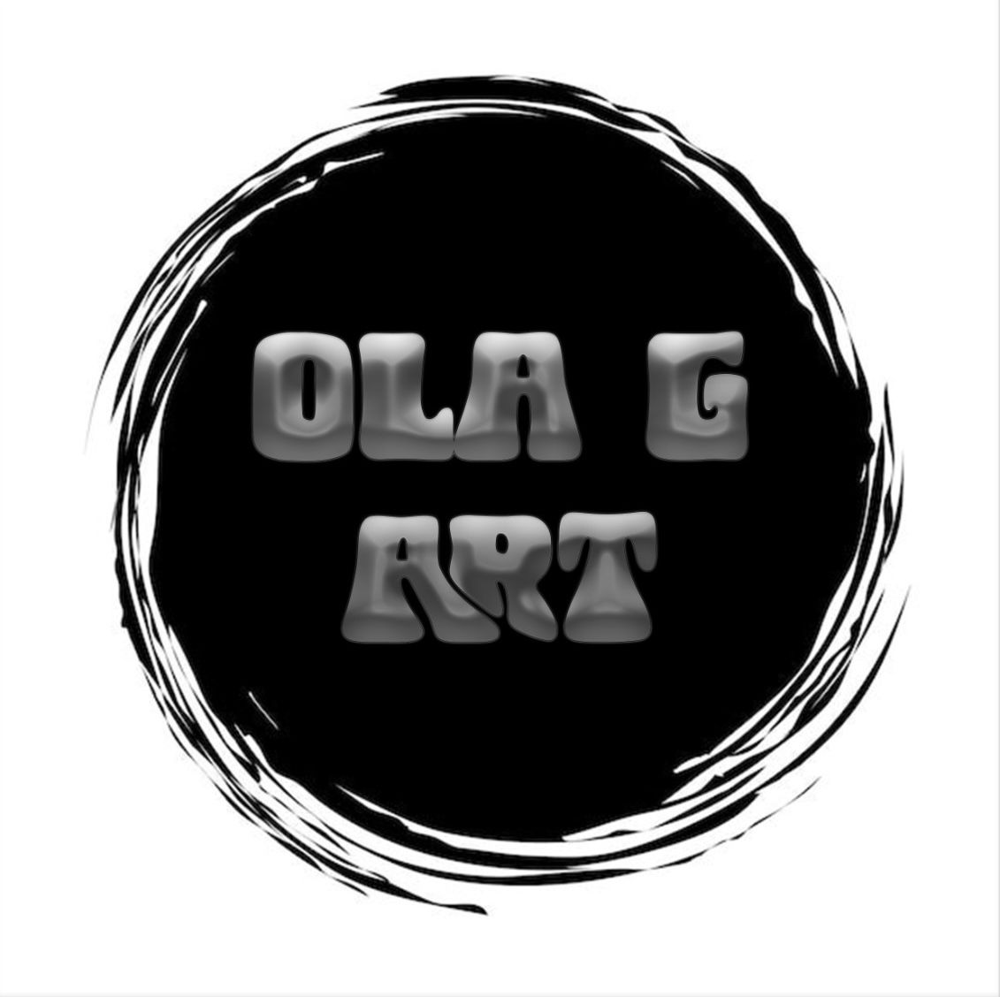
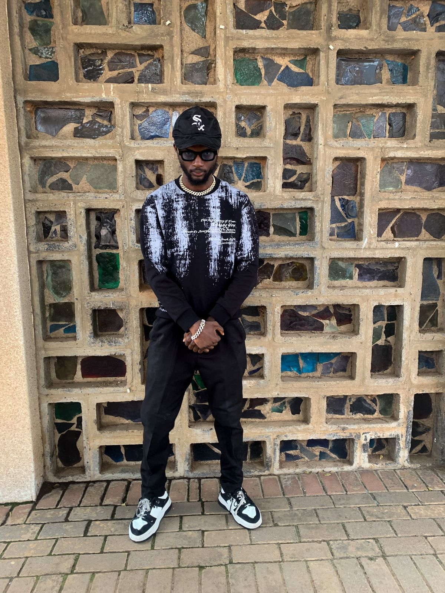
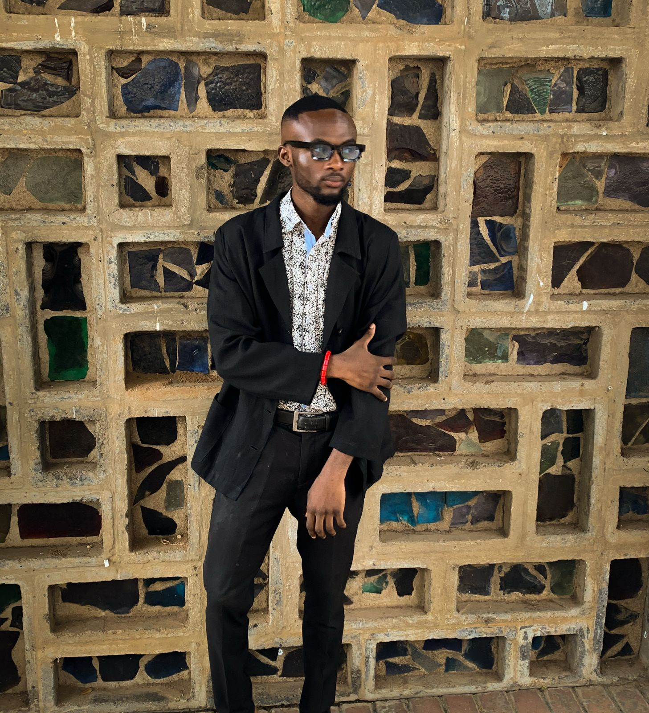
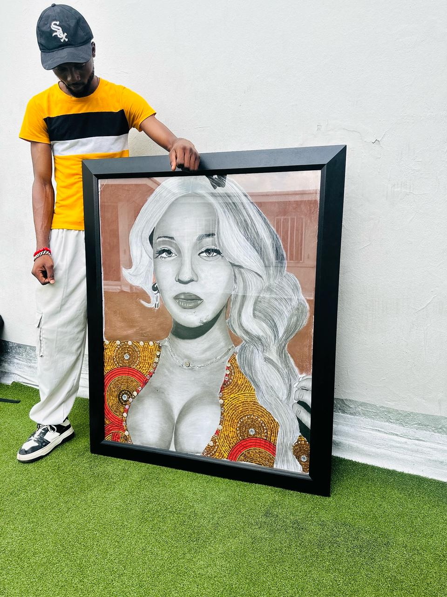

Meet the artist behind the canvas and the people who inspire the vision.
My name is Olajire Ojo, and I began my artistic journey at the age of 10. From an early age, I found myself drawn to the world of art. What started as a simple hobby gradually transformed into a lifelong passion. In the beginning, my skills were raw, but with consistency, practice, and a deep love for the craft, I steadily improved and began to develop my own unique artistic voice.
Art has always been more than just a creative outlet for me—it’s a source of healing and self-expression. Whenever I feel down or overwhelmed, drawing has the power to restore my peace and lift my mood. I often pair my creative sessions with music, which inspires and energizes my work.
Today, I specialize in mixed media art, a style that allows me to blend different materials and techniques to create dynamic, textured pieces. It gives me the freedom to explore and express emotions in ways that are both bold and personal. Mixed media has become my signature style—it’s vibrant, layered, and full of life, much like my artistic journey.
Under the name Ola G Art, I continue to grow, explore, and share my work with the world. My mission is to create art that connects with people on a deeper level, evoking emotion and inspiring creativity in others—just as art has always done for me.